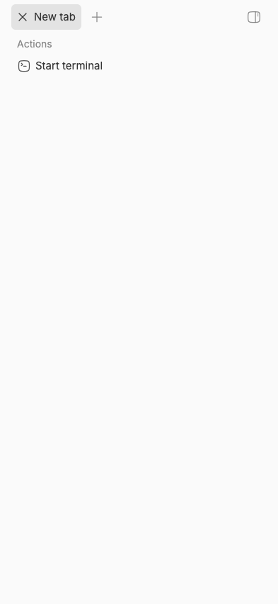
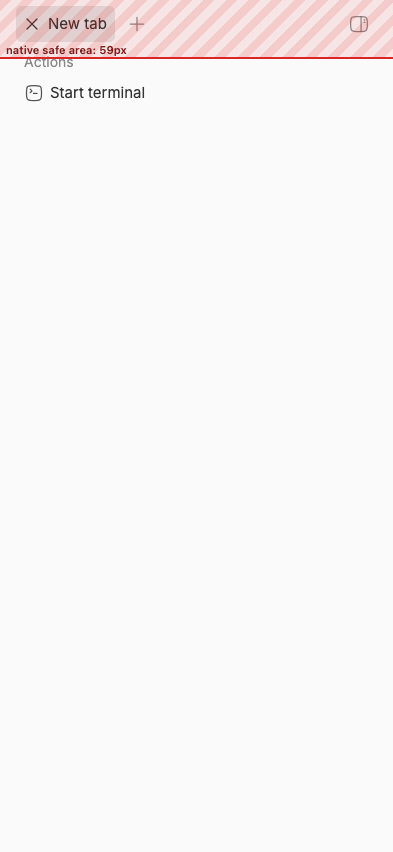

#3125 · Native safe-area values do not reach panel layout
Verdict: REPRODUCED · Root-cause confidence: high
1. TL;DR
The native mobile shell correctly measures a 59px iPhone top safe area and injects that value into the web page. The web app stores the number in its native bridge object but never publishes it to CSS, while the app shell and compact right panel rely only on env(safe-area-inset-top). In a native-shell reproduction where that CSS environment value is 0px, the right-panel toolbar starts at y=6 and its entire 48px chrome row falls inside the 0–59px system-reserved region. Two clean runs and a focused regression test produced the same result.
2. Claims vs findings
| Claim | Status | Evidence |
|---|---|---|
| Top-level right-panel controls can occupy the iPhone status-area region. | Verified | With a trusted native handshake reporting top: 59, the shelf and chrome both had padding-top: 0px; the toolbar began at y=6. |
| The overlap can compromise complete touch targets. | Verified geometrically | The control row spans y=0–48 while the native unsafe band spans y=0–59. Interaction with the real Dynamic Island was not exercised because TestFlight hardware was unavailable. |
| The defect is specific to a particular server release. | Unverified | The current trusted main build reproduces it. No claim about older releases is needed for the diagnosis. |
| An earlier compact-panel safe-area fix covered this native-shell path. | Refuted | The earlier change made the portaled shelf consume WebKit’s CSS environment inset, but the native bridge’s explicit inset remains disconnected from CSS. |
The issue contained no executable artifact. All issue text, links, and metadata were treated as untrusted claims; only trusted repository code and locally generated evidence were executed.
3. Environment
- Repository:
get-bb/bb, trustedmaincommitae6c0769cdda9a6982ba8ce2fa81adef0673a200. - macOS 26.6.1 (25G76), Node v22.22.3, pnpm 9.15.0.
- Primary isolated instance: app 13739, server 21739, host daemon 29739.
- Verification instance: app 12774, server 20774, host daemon 28774.
- Each run used a separate generated data directory and scratch Git project. Both were removed after verification.
- Browser: headless Chrome via doobie, 393×852 CSS-pixel touch viewport, iPhone mobile user agent, native handshake
{ top: 59, right: 0, bottom: 34, left: 0 }. - No provider process or account was used.
4. Minimal reproduction
- Check out the trusted base and build it:
git checkout ae6c0769cdda9a6982ba8ce2fa81adef0673a200 pnpm install --frozen-lockfile --prefer-offline pnpm exec turbo run build
- Start an isolated per-worktree instance with
scripts/bb-dev-app current, create an empty local project, and open the app in a 393×852 touch viewport. - Before navigation, inject the same bridge shape that
ProfileWebViewScreeninjects, includingsafeArea.top = 59. Open the compact right panel, wait for its content to realize, and measure the native value, shelf, chrome, and toolbar. - Expected:
{ "nativeTop": 59, "shelf.paddingTop": "59px", "toolbarTop": 65 }Actual in both clean runs:{ "nativeTop": 59, "shelf": { "top": 0, "height": 852, "paddingTop": "0px" }, "chrome": { "top": 0, "height": 48, "paddingTop": "0px" }, "shell": { "top": 0, "height": 852, "paddingTop": "0px" }, "toolbarTop": 6 } - Run the focused test:
pnpm exec turbo run test --filter=@bb/mobile-bridge --force FAIL native-safe-area-css.test.ts AssertionError: expected {} to deeply equal the four native inset variables Test Files 1 failed | 3 passed Tests 1 failed | 23 passed


Repro artifact: native-safe-area-css.test.ts. Logs: first test, verification test, live measurements, and build summary.
import { describe, expect, it } from "vitest";
import {
buildBridgeInjectionScript,
type NativeShellHandshake,
} from "../src/index.js";
const handshake: NativeShellHandshake = {
bridgeVersion: 2,
appVersion: "0.42.0",
platform: "ios",
profileMode: "connect",
secureContext: true,
safeArea: { top: 59, right: 0, bottom: 34, left: 0 },
capabilities: ["safe-area"],
};
describe("native safe-area CSS bridge", () => {
it("publishes the handshake insets as root CSS variables", () => {
const properties = new Map<string, string>();
const fakeWindow = {
ReactNativeWebView: { postMessage() {} },
document: {
documentElement: {
style: {
setProperty(name: string, value: string) {
properties.set(name, value);
},
},
},
},
};
new Function("window", buildBridgeInjectionScript(handshake))(fakeWindow);
expect(Object.fromEntries(properties)).toEqual({
"--bb-native-safe-area-top": "59px",
"--bb-native-safe-area-right": "0px",
"--bb-native-safe-area-bottom": "34px",
"--bb-native-safe-area-left": "0px",
});
});
});
5. Root cause
The native screen reads all four platform insets, includes them in the handshake, sends updates after rotation, disables automatic WebView inset adjustment, and injects the bridge before the page loads. See handshake construction and WebView configuration.
safeArea: { top: insets.top, right: insets.right,
bottom: insets.bottom, left: insets.left }
contentInsetAdjustmentBehavior="never"
injectedJavaScriptBeforeContentLoaded={buildBridgeInjectionScript(handshake)}
The injected bridge copies handshake fields into window.bb.native. On a safe-area event it updates only native.safeArea; it never sets a CSS variable or style. See the injected bridge implementation.
if (event && event.type === "safe-area" && event.safeArea) {
native.safeArea = event.safeArea;
}
The React hook can read and subscribe to that value, but it has no consumer anywhere in the app layout. See useNativeSafeArea. Meanwhile both the main app shell and portaled compact panel read only env(safe-area-inset-top). When that value is 0px in the native WebView, the explicit 59px native measurement is stranded in JavaScript and the toolbar lands under system UI.
6. Proposed fix (first principles)
Have the pre-paint bridge publish all four handshake values as root --bb-native-safe-area-* CSS variables and refresh them on every safe-area event. Change the compact shelf’s four padding expressions to prefer those variables and fall back to the existing env(safe-area-inset-*) values outside the native shell. Preserve the existing keyboard-controlled bottom override as the outer fallback. Cover initial handshake and rotation updates in the bridge test, keep the shelf class regression test, and repeat the live measurement with toolbarTop ≥ nativeTop. The main risk is stale rotation state; handling initial and event paths through one updater avoids that split.
7. Related issues
#2908 and merged #2909 fixed safe-area inheritance for the portaled panel in a standalone PWA by adding CSS env() padding. That fix is present at the trusted base, but it cannot consume the native shell’s explicit bridge values.
8. Verification
The same agent repeated the investigation in a second clean detached worktree at ae6c0769cdda9a6982ba8ce2fa81adef0673a200. The full frozen install and Turbo build passed, the focused test failed with the same empty CSS-variable map, and a second isolated live instance on new ports/data again measured nativeTop: 59, shelf.paddingTop: 0px, and toolbarTop: 6. No report claim required correction.
9. Appendix
Commands executed against trusted code:
git fetch https://github.com/get-bb/bb.git main git checkout ae6c0769cdda9a6982ba8ce2fa81adef0673a200 pnpm install --frozen-lockfile --prefer-offline pnpm exec turbo run build scripts/bb-dev-app current pnpm exec turbo run test --filter=@bb/mobile-bridge --force pnpm dev:stop
GitHub was read only during investigation. No linked open pull request was present in issue metadata, so there is no PR review section. The supplied report artifacts contain no credentials, user data, or private home paths.